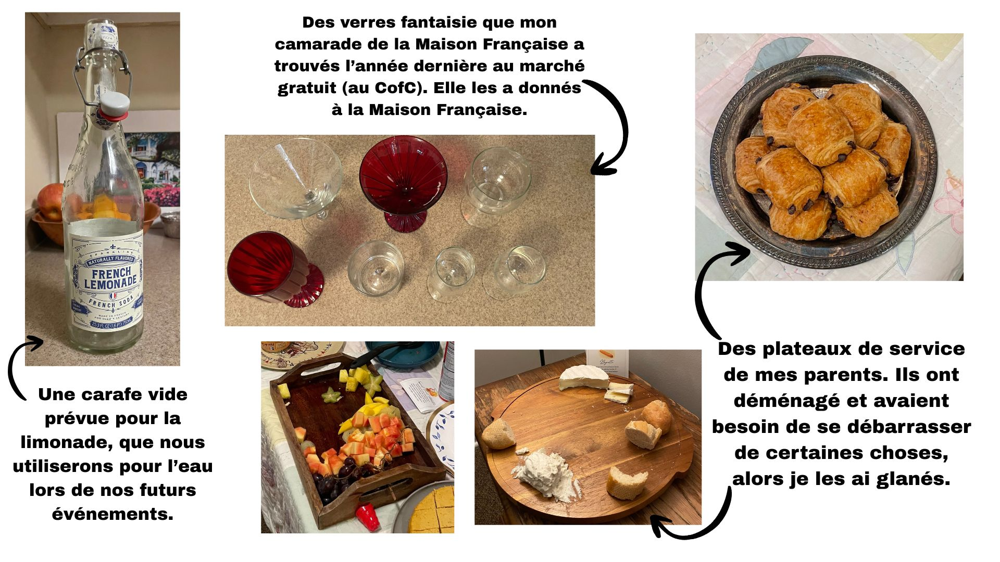
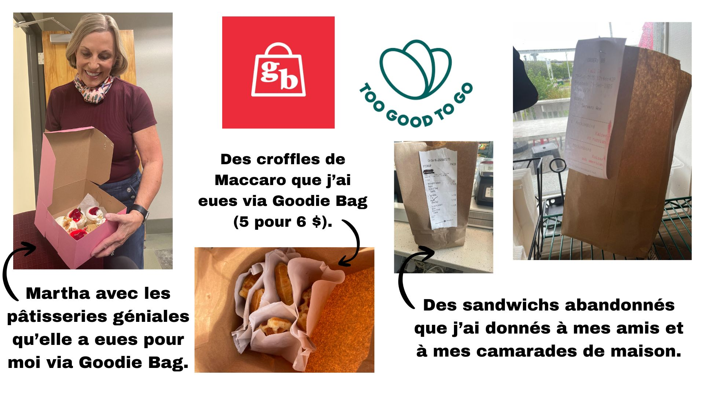
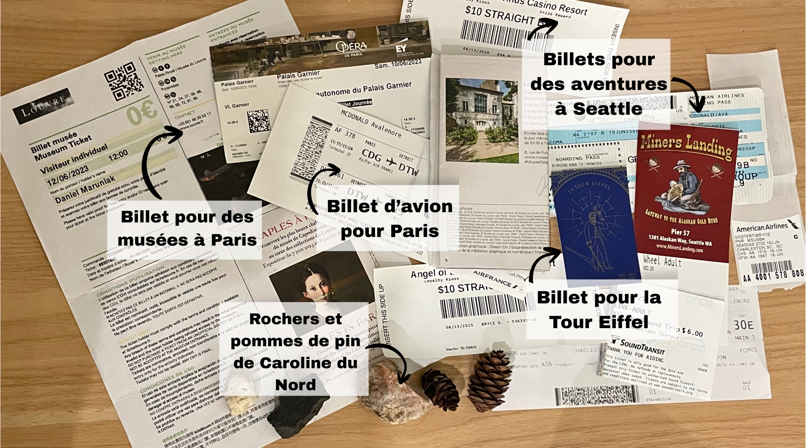

Mes Glanages
Ici, j’ai inclus mes glanages personnels, et je réfléchis comment ils
ont aidé l’environnement. Après regardant le film, j’ai compris plus
comment je glane dans ma propre vie, et comment je peux glaner mieux
dans le futur.
Des Produits du Glanage de la Maison Française
Quand j’ai commencé à organiser des événements pour la Maison Française, elle n’était
pas encore une organisation structurée. Peu à peu, j’ai contribué à la transformer
en la French House and Friends Organization afin que nous puissions organiser des
événements réguliers et obtenir du financement. Au début, je n’avais pas beaucoup
de ressources ni d’argent, donc il fallait que je sois créative et ingénieuse. Les
images ci-dessous le montrent.

Du Glanage et du Nourriture
Je déteste le gaspillage de nourriture, donc j’essaie de le réduire autant que possible.
J’utilise des applications comme Goodie Bag et Too Good To Go pour sauver la nourriture
imparfaite ou un peu vieille. J’ai aussi travaillé dans la restauration depuis l’âge de
15 ans, donc j’ai vu énormément de gaspillage — souvent parce que certaines personnes ne
venaient jamais récupérer leur commande. Quand c’était possible, je sauvais cette nourriture
pour d’autres : mes amies, mes colocataires, ma famille.

Des produits du glanage de mon box des mémoires
Choses du mes années joueur basson:

Voici quelques objets sentimentaux provenant de mes sept années comme joueuse de
basson.
Pendant cette période, j’ai fait beaucoup d’auditions et de compétitions, alors j’ai
inclus les médailles que j’ai gagnées. Je garde aussi plusieurs de mes anches de basson —
j’ai choisi les plus belles. Parfois, je rêve de rejouer un jour, alors je les conserve au
cas où ce serait possible dans le futur. De plus, les anches étaient très chères
(~20–50 USD chacune), donc je n’arrive pas à me résoudre à simplement les jeter.
Trucs de mes vacances:

Voici des objets que la plupart des gens considéreraient comme du « gaspillage » ou « inutiles ».
Mais pour moi, chaque article porte une mémoire associée à un voyage. J’ai beaucoup de choses
de mes vacances à Paris — mais tous ces objets sont petits, peu coûteux, souvent des morceaux
de papier (billets, cartes, pamphlets, …). Tous les objets visibles sur l’image sont de ce
type — peut-être qu’ils n’ont pas beaucoup de signification pour les autres, mais leur aspect,
leur sensation et leur odeur me transportent dans les souvenirs de chaque voyage.